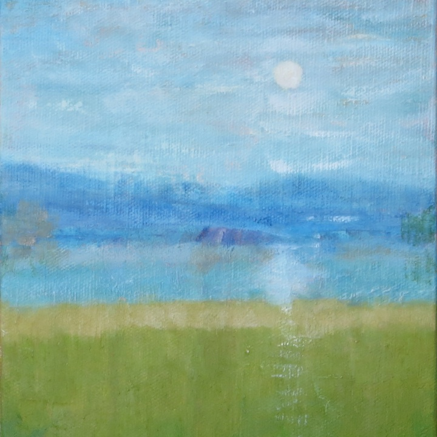
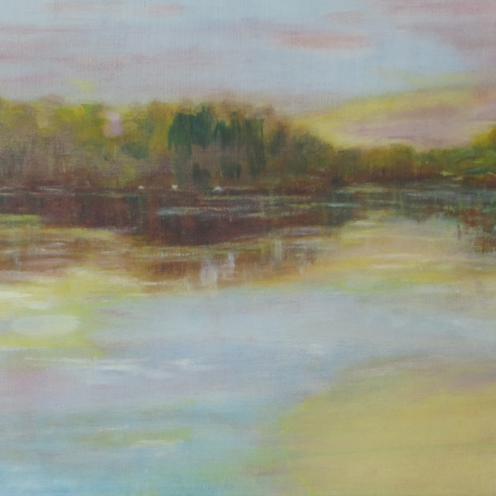
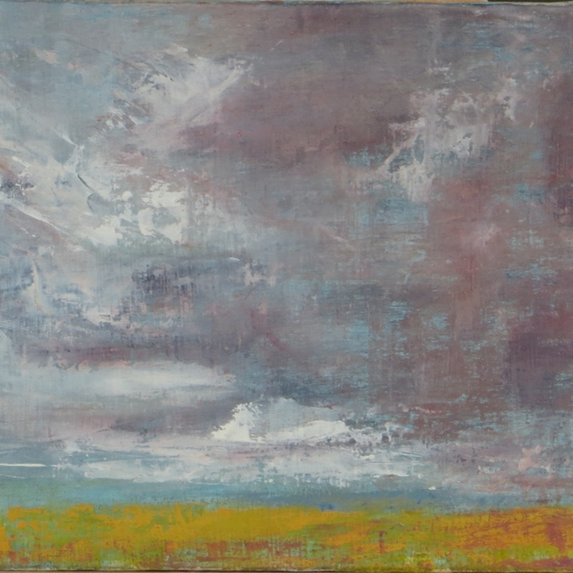

Gallery

Blue Moon - Watercolours on Paper - 21 x 15cm

Lavander 2017 - Watercolours on Paper - 21 x 15cm

Moorn - Watercolours on Paper - 21 x 15cm

Blue Moon - Watercolours on Paper - 21 x 15cm

Blue Moon - Watercolours on Paper - 21 x 15cm

Blue Moon - Watercolours on Paper - 21 x 15cm